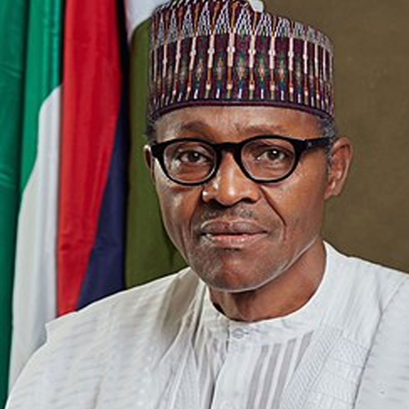

Muhammadu Buhari
Retired major general in the Nigerian Army and previously served as the nation's head of state from 31st December, 1983 to 27th August, 1985.
- All Progressives Congress
Atiku Abubakar
Atiku Abubakar was born on 25th November 1946 to a Fulani trader and farmer Garba Abubakar, and his second wife, Aisha Kande, in Jada village of Adamawa State.
- People's Democratic Party (PDP)
Obadiah Mailafia
He is a former official of the African Development Bank Group and one-time Deputy Governor of the Central Bank of Nigeria (CBN) He was also the Chief of Staff of the African, Caribbean and Pacific Group of States (ACP), the 79-nation multilateral development institution based in Brussels, Belgium.
- African Democratic Congress (ADC)

Felix Nicolas
Felix is a politician.
- Citizens Popular Party (CPP)